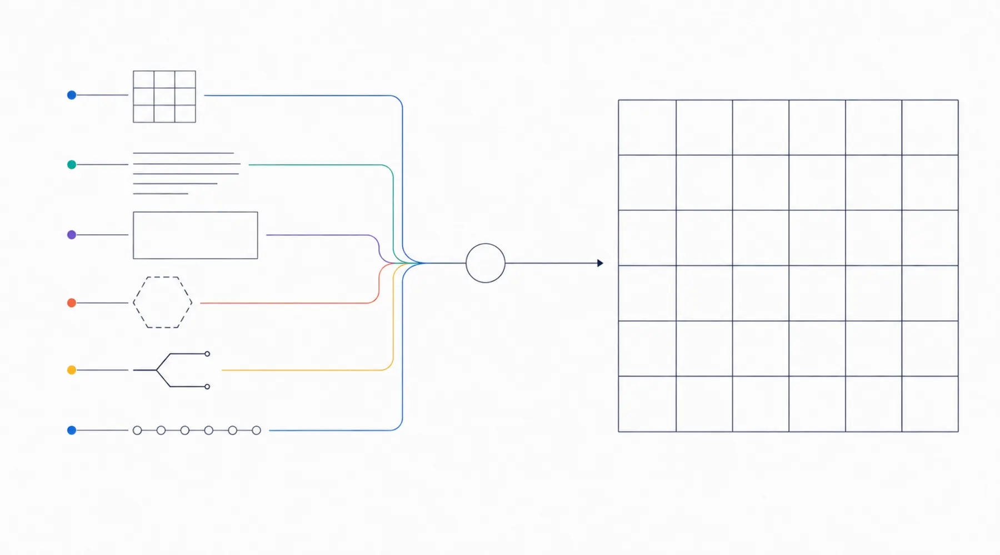

Web制作サービス
何を作り、
何を整えるのか。
診断で方向を整理し、必要なページ、文章、画像、問い合わせ導線を一つのWebサイトへまとめます。1ページから5ページ前後まで、今の事業に必要な範囲を選べます。
- 制作費
- 80,000円 〜 220,000円
- ページ数
- 1〜5ページ前後
- 公開後の管理
- 必須ではありません
買い切り
必要な範囲だけ
別契約

そろえるところから始めます。
Webサイト制作は、原稿と写真がすべてそろってから始まるものではありません。手元にあるメモ、既存の資料、フォームの回答から、伝える順番を整理していきます。
プラン範囲を超える作業（本格的な取材・撮影、商標調査を伴うロゴ開発など）は、別途お見積もりになります。
制作前に整理すること
相談の最初に、この7つを一緒に確認します。診断結果があると、この会話が早く進みます。
Webサイトを作る目的
問い合わせを受けたいのか、事業内容を説明したいのか、既存客への案内を置きたいのか。
主に見てほしい相手
紹介で来る人、検索で来る人、SNSから来る人。どこから来る人を主に想定するか。
最初に伝える内容
ファーストビューで何を見せるか。事業名だけでは足りません。
必要なページ
1ページで足りるのか、サービス・料金・事例を分けるのか。
問い合わせ方法
フォーム、メール、電話、LINE。どれを主な受付にするか。
原稿と画像の準備状況
今あるもの、これから用意できるもの、用意できないものを分けます。
公開後の管理
ご自身で更新するか、管理を依頼するか。決めていなくても構いません。
全プラン共通
プランが変わっても、ここは変わりません。
料金の差はページ数と、文章・画像・ロゴをどこまで整えるかの差です。土台の作りは共通です。
- 事業内容が伝わる情報構成 — 何を、どの順番で読ませるかを設計します
- スマートフォンとパソコンの表示 — 320pxの狭い画面から確認します
- 問い合わせにつながる導線 — 読み終わった場所に次の行動を置きます
- 検索エンジンへ内容を伝える基本設定 — title、説明文、見出し構造、画像の代替テキスト
- SSLと公開状態の基本確認 — 公開時に表示と通信を確認します
- 納品前の表示・リンク確認 — 主要ブラウザでの表示崩れとリンク切れを確認します
プランで変わること
8項目だけが変わります。金額の差はこの8項目の差です。
ページ数
1ページ / 3ページ前後 / 5ページ前後
文章整理の深さ
支給原稿の誤字・見出し調整 〜 回答内容から紹介文・導線文を作成
画像準備の範囲
ご支給のみ 〜 素材選定・生成・トリミング・ページ別調整
簡易ロゴ
おまかせプランのみ、Webで使える1案
外部サービス導線
おまかせプランのみ、フォーム・LINE・SNSを整理
計測設定
計測タグを追加できる構造 〜 GA4・Search Consoleの初期設定支援
修正回数
1回 / 1〜2回 / 1〜3回
納期目安
1〜2週間 〜 4〜6週間
基本SEOで行うこと
検索結果に出るための土台を整えます。順位そのものは扱いません。
各ページのtitleとdescription、見出しの構造、画像の代替テキスト、内部リンク、モバイル表示、表示速度に配慮します。事業名、サービス内容、対応範囲など、ページに必要な情報を検索エンジンが読み取りやすい形にします。
- ページごとに違う title と説明文を書きます
- 見出しを h1 から順に組み、文章の構造を機械が読める形にします
- 意味を伝える画像には内容に合う代替テキストを付け、装飾画像は読み上げ対象から外します
- sitemap.xml と robots.txt を用意します
- 特定キーワードの順位、アクセス数、問い合わせ件数の保証は行いません
- 継続的なSEO記事の量産、被リンク施策は含みません
検索結果は、検索エンジン側の基準変更、競合の状況、地域や検索する人によって変わります。制作側で確実に決められるのは、読み取りやすい構造と、正確な情報を置くところまでです。ここは正直にお伝えします。
範囲を、先に閉じます。
どこまでを制作費に含み、どこからが別途になるのかを、見積もり前に見えるようにしています。あとから「これは別料金でした」となる箇所を減らすためです。
別途見積もりになるものでも、対応できる場合はご相談ください。対応できない場合は、その旨をお伝えします。
制作に含まれないこと
先にお伝えします。必要な場合は、対応できる方をご紹介できる範囲でご案内します。
- 36タイプ分の見本サイト制作
- 高度な予約、会員、決済、在庫、CMS機能
- 継続的な広告運用
- 本格的な取材と写真撮影
- 商標調査を含む本格ロゴブランディング
- 検索順位、売上、問い合わせ件数の保証
公開後の管理は制作費に含まれません。必要な場合のみ、公開・管理プランを別途お選びいただけます。